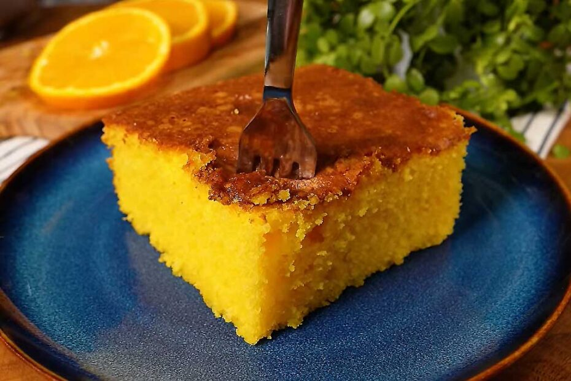

Doces · Tortas e bolos
Bolo de laranja

Ingredientes
- ½ xícara de óleo
- 2 xícaras de açúcar
- 4 gemas
- 2 xícaras de fubá
- 1 xícara de farinha de trigo
- 1 colher (sopa) de fermento em pó
- 1 xícara de suco de laranja
- 4 claras em neve
- Manteiga e farinha para untar e polvilhar
Modo de preparo
- Preaqueça forno médio (180 °C). Bata óleo, açúcar e gemas até creme.
- Peneire fubá, farinha e fermento; misture ao creme alternando com suco de laranja.
- Junte claras em neve. Despeje em fôrma redonda grande com buraco, untada. Asse 45 min. Esfrie e congele.
Observação
Preencha o buraco da fôrma com plástico antes de congelar.